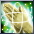
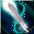
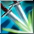
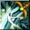
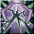
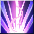
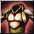
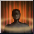

Mercenary
A TierOverview
| Role | DPS / Tank |
| Difficulty | Easy |
| Strengths | Easy survivability in early game |
| Weaknesses | A jack of all trades, master of none! |
| Why Play It | The typical Excalibur class, just with a Spear (which is still cool) |
Skills
Toggles / Buffs
- Blessing

- Divine Cluster
- Holy Aura

- Defensive Stance
- Invigorating Essence
 your main skill in gear!
your main skill in gear!
Single Target
- Divine Cross
- Laser Blade

AoE
- Wild Stream
- Dual Strike

- Deathblow
Utility
- Hate Aura for pulling
- Light Speed for… speeeeeeeed
- Immortality you will not die at 1 HP for a few seconds
- Provocation

- Divine Flash prevents mobs from attacking for 2 seconds
Breakers
- Offense Breaker

- Defense Breaker

- Mental Breaker
Passives
- Lust for Blood

your alternative skill on gear if you cannot find Invigorating Essence - Desperate Deflection
- Frantic Defense

- Reckless Vivacity

- Accelerated Casting requires a 2H weapon equipped
Gameplay
The playstyle of Mercenary is one of if not the easiest in the game, which is why it is always recommended to start with this class as a new player.
You activate your buffs and toggles, use Hate Aura to pull mobs, then cast Defense Breaker before your main AoE. This way you benefit from both Tactical Advantage and Lust for Blood in case your Holy Aura has not procced yet. Then use your main AoE skills: Wild Stream and Dual Strike . Use Divine Flash to prevent mobs from attacking for 2 seconds, giving you a safe window to finish them off.
You do not have to worry much about healing and defenses thanks to Desperate Deflection , Frantic Defense , and Reckless Vivacity which boost your P.Def, HP, and damage reduction, combined with Lunacy boss card.
You must equip a 2H weapon (preferably Spear 170) to activate your passive Accelerated Casting , which reduces the cooldown of your skills by 45.5% at level 13 (with R2 Helmet +20, DT buff, and Bear Belt).
Talent Build
| Points | Allocation |
|---|---|
| 5 TP | 3 | 2 | 0 |
| 6 TP | 3 | 3 | 0 |
| 7 TP | 3 | 3 | 1 |
| 9 TP | 3 | 3 | 3 |
Stats
| Priority | Stats |
|---|---|
| Damage | Critical Rate, Critical Power, STR |
| Defense | Vitality — more Vitality means more HP and P.Def |
Accessories
| Setup | Accessories |
|---|---|
| Damage | Rings with 40+ STR / 20+ CP, the 3rd stat could be movement speed, Evasion, or P.Atk depending on what you need. |
| Defense | Rings with 40+ Vitality / 20+ CP, the 3rd stat could be movement speed, Evasion, or P.Atk depending on what you need. |
Pets & Belt
| Setup | Details |
|---|---|
| Early Setup | 2 Kenta + 1 Cube + Lunacy |
| Normal Setup | 3 Mino S1 + Lunacy |
| Full Setup | 3 Mino S1 + 2 Snowman + Reviac + Lunacy / P.Hector + Devil Skeleton |
| Equipped Belt | All passives and Physical Deva |
| Summoned Pet | Bloodthirsty Slaughterer |
Gear
Progression Path
- R2 helmet +20 (all skills +1)
- R6 +15 gear from Hidden Sanctuary
- Circus weapons and accessories from Circus dungeon
- Parallel World gear (either trash stats 2 slots with Invigorating Aura, or max slots in each gear but trash skill, depends on what you could find)
- Island of Gods weapons and rings
- DD Accessories and Yushiva belt
- Lava gear (boots, gloves, armor, helmet)
- Medal
- Emblem
Optimization
You upgrade the above when applicable e.g., more slots in belt, +24 weapon, +24 Medusa helmet, better stats on gear. You always prioritize stats like the following:
- Evasion and movement speed on boots | Evasion or CP on armor, Emblem, Medal
- Accuracy on gloves, medal or emblem
| Stat Targets & Item Stat Info | |
|---|---|
| Accuracy Target | |
| RoA | 1000+ Accuracy |
| Hidden RoA | 1200+ Accuracy |
| DD6 (level 180) | 1500+ Accuracy |
| SF (level 200) | 2000+ Accuracy |
| Item Stat Examples | |
| Accuracy | ~200+ on gloves, emblem, or medal |
| Evasion | ~160+ on boots, armor, medal, or emblem |
| Movement Speed | ~17+ on boots, 30+ on rings |
| You can find the exact min/max stats on the Discord channel (to be imported here soon). | |
Titles
- Title for Reduced Damage: Camper
(Purchase a tent from the Merchant in Hidden Village) - Titles from Underground Dungeons Stage 2:
Title Location Strength Vitality Akt II, Scene IV Allegro Palmir Plateau +28 +23 Akt II, Scene IV Moderato Palmir Plateau +23 +19 Akt II, Scene IV Andante Palmir Plateau +19 +16 Akt II, Scene III Allegro Crystal Valley +22 +18
Leveling Progression
Tips
- Use the Bloodthirsty Slaughterer potion for a big damage boost.
- After using both AoEs, you can kite mobs if you have a hard time tanking.
- Save Immortality during boss encounters like the Reviac room.
- Lunacy card is your best friend.
- You can switch to a shield to activate Deflecting Shield + Shield of Revenge, then switch back to your Spear during hard encounters.
Endgame
| Aspect | Rating |
|---|---|
| Performance | 7/10 |
| Solo Ability | 6/10 |